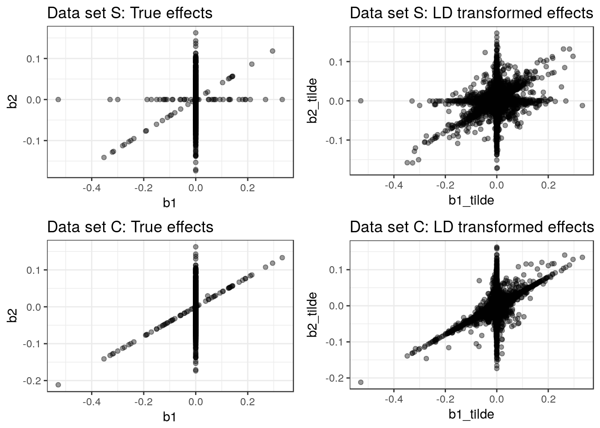
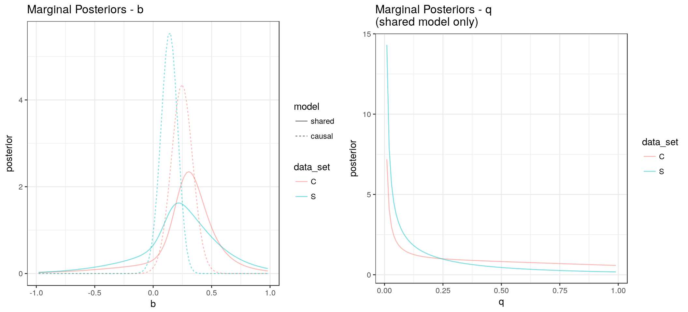
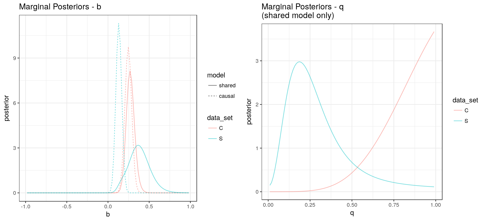
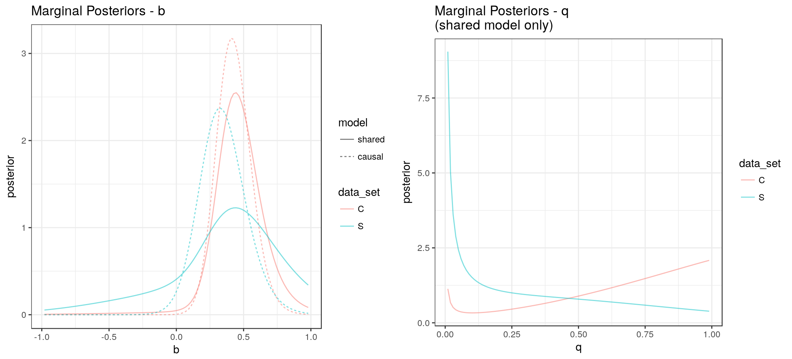
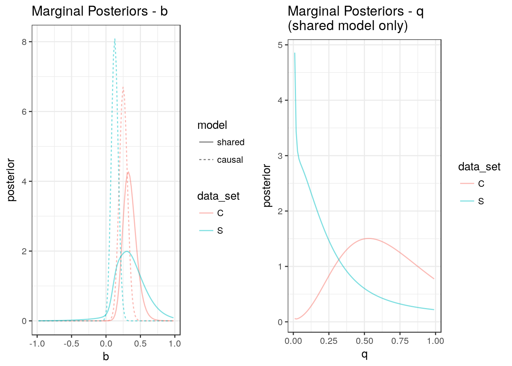
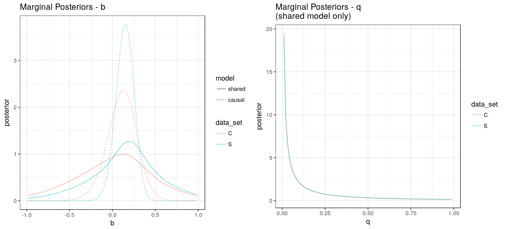
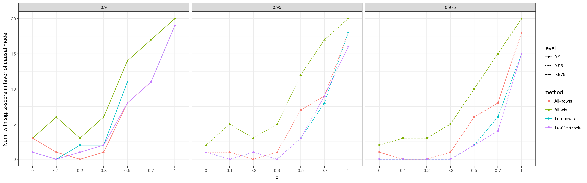

In this analysis, we determined that using the top 1% of SNPs only seemed like a viable option in a setting with no LD. In this anlysis, my goal is to determine if this is also reasonable.
LD complicates this question in two ways:
With LD, the true likelihood is too difficult to calculate so we have been approximating it using a weighted pseudo-likelihood. Results here indicate that if the effect sizes are sparse, weights of \(w_j = \left( \sum_{ij} r_{ij}^2 \right)^{-1}\) may work well for approximating the posterior but may not be the best choice if true effects are not sparse.
With LD, there are many possible ways that we could choose a set of ``top SNPs’’. In this analysis I will experiment with choosing a set of SNPs in minimal LD with each other.
In these explorations we will use two test data sets. Both have 100,000 SNPs falling into 299 LD blocks. LD structure is taken from Wen and Stephens estimates of LD from the 1,000 genomes European cohort. Data set S is generated under the shared model with \(q=0.5\) and \(b=0.4\). Data set C genrated under the causal model with \(q=1\) and \(b=0.4\).
In our model without LD, we assume that, conditional on the true effects, effect size estimates are independent. That is, we assume that \[ \hat{\beta}_k \sim N(\beta_k, S_k^{2})\] where \(\hat{\beta}_k\) is the \(p\)-vector of effect size estimates for study \(k \in \lbrace 1, 2 \rbrace\), \(\beta_k\) are the vectors of true effects and \(S_k\) is a diagonal matrix with \((S_k)_{jj} = se(\hat{\beta}_{kj})\). We assume that the correlation between \(\hat{\beta}_{1i}\) and \(\hat{\beta}_{2j}\) is 0 if \(i\neq j\) and \(\rho\) if \(i=j\).
If there is LD then, using results from Zhu and Stephens (2016), \[ \hat{\beta}_k \sim N(S_k R S_k^{-1} \beta_k, S_kRS_k),\] where \(R\) is the correlation matrix between SNPs. For simplicity, we assume the same LD between the two studies. We define the LD trasformed effects as \[ \tilde{\beta}_k = S_k R S_k^{-1} \beta_k. \] If \(R\) is block diagonal and the effects in both studies are sparse, we might expect that most of the time there will be at most one effect in either study within an LD block.
If the true effects are described by the “b-q” model we have talked about previously, then \[ \beta_{2j} = b\beta_{1j}Z_j + \gamma_j, \] where \(b\) is the effect size of the shared factor on trait 1, \(Z_j \sim Bern(q)\) and \(\gamma_j\) is the effect of SNP \(j\) directly on trait 2 and not through the shared factor, \(\gamma_j \sim g(\pi_2, \sigma)\) where \(g\) is an ash distribution with mixture parameters \(\pi_2\) and grid of variances \(\sigma\). Therefore, \[ \tilde{\beta}_2 = b S_2 R S_2^{-1} (\beta_1 \circ Z) + S_2 R S_2^{-1} \gamma. \]
If each SNP has the same allele frequency in the two studies then \(S_2 = c S_1\) where \(c\) is a constant that depends on the sample sizes of the two studies. In this case, we can re-write the relationship above as \[ \tilde{\beta}_2 = b S_1 R S_1^{-1} (\beta_1 \circ Z) + S_2 R S_2^{-1} \gamma. \]
Now assume that \(R\) is block diagonal and can be decomposed into \(B\) blocks. We use \(p_b\) to indicate the number of SNPs in block \(b\) so \(\sum_{b=1}^{B}p_b = p\). If \(x\) is a \(p\)-vector then we will use \(x_b\) to indicate the \(p_b\)-vector of elements corresponding to SNPs in block \(b\). If true effects for the two traits are sparse enough that there is at most one effect from either study within an LD block then
\[ \tilde{\beta}_{2,b} = b \tilde{\beta}_{1,b} \tilde{Z}_b + S_2 R S_2^{-1} \gamma_b, \] where \(\tilde{Z}_b\) is an indicator that any SNP in block \(b\) acts through the shared factor and \(Z_b \sim Bern(q)\). This means that under the special conditions that
we can use summary statistics from studies with LD to estimate the same parameters we were able to estimate in the case without LD. We can maximize the same likelihood we used in the case without LD to obtain unbiased point estimates of \(b\) and \(q\).
This does not, however, account for correlation between effect size estimates for different SNP which will effect our estimates of the posterior distributions of \(b\) and \(q\). If SNPs are independent, we can write the total likelihood as \[L(\hat{\beta}_1, \hat{\beta}_2 \vert b, q, \rho, S_1, S_2, \theta) = \prod_{j=1}^{p} L(\hat{\beta}_{1,j}, \hat{\beta}_{2,j} \vert b, q, \rho, (S_1)_{jj}, (S_2)_{jj}, \theta).\] Here, the hyper-parameter \(\theta\) includes the mixture proportions and grids of variances for the ash prior distributions of \(\beta_{1}\) and \(\gamma\).
In the presence of LD, this no longer holds. We have taken an approach similar to that of Liley et al (2016). We construct a “pseudo-log likelihood” as a weighted sum of the log likelihoods for each SNP. \[PL(\hat{\beta}_1, \hat{\beta}_2 \vert b, q, \rho, S_1, S_2, \theta) = \prod_{j=1}^{p} \left(L(\hat{\beta}_{1,j}, \hat{\beta}_{2,j} \vert b, q, \rho, (S_1)_{jj}, (S_2)_{jj}, \theta) \right)^{w_j}.\] Here, \(w_j\) captures the amount of LD between SNP \(j\) and other SNPs. We set \(w_j\) equal to the inverse of the LD score, \(w_j = \frac{1}{\sum_{i\in S_b} r_{ij}^2}\) where \(b\) is the LD block containing SNP \(j\).
We then estimate a “pseudo-poseterior” distribution for \(b\) and \(q\) by assuming independent priors for \(b\) and \(q\) \(P_b\) and \(P_q\) and defining \[ P(b, q \vert \rho, \hat{\beta}_1, \hat{\beta}_2, S_1, S_2, \theta ) \propto PL(\hat{\beta}_1, \hat{\beta}_2 \vert b, q, \rho, S_1, S_2, \theta) \cdot P(b) \cdot P(q) \]
In reality, the four conditions above will not hold exactly. This means that the model of \[ \tilde{\beta}_{2,b} = b \tilde{\beta}_{1,b} \tilde{Z}_b + S_2 R S_2^{-1} \gamma_b, \] is an approximation. We can look at the joint distribution of LD transformed effect sizes in the simulated data sets. Below, I show the tue and LD transformed effects for the two data sets. We can see that in the LD transformed effects, there are many more SNPs that have non-zero effects on both traits and that not all of these lie on the line with slope \(b\).

In the following experiments, the distribution of direct effects and \(\rho\) are estimated from the data using all SNPs and assuming \(b = q = 0\).
We first calculate the posterior distribution using all SNPs and the LD weights. Below I show plots of the marginal posteriors for \(b\) and \(q\).

Under the shared model, the distribution of \(q\) is shifted farther to the right for data set C than for data set S but it is not nearly as peaked as it was using the data with no LD.
Using all SNPs, the \(z\)-score comparing the shared model to the causal model for data set C is -2.49. For data set S it is -0.55 with negative \(z\)-scores favoring the causal model.

Without the weights, the posterior distributions are much more peaked and farther from the priors. They also show a much clearer difference between the two data sets. The \(z\)-score comparing the shared model to the causal model for data set C is -1.44. For data set S it is 0.77 with negative \(z\)-scores favoring the causal model. The evidence in favor of the causal model from data set C is now weaker because the posterior is more similar to the causal model.
Both data sets have 72 SNPs that causally effect trait 1. We assume that, for the most part, these SNPs are not in LD with each other (they are chosen randomly from the 10,000 SNPs in the data) and therefore don’t include the weights when we calculate the oracle posterior. For the distribution of direct effects, we start with the distribution estimated using all SNPs and condition on the effect for trait 1 not being zero.
seed: 720903897
Model 2.
Model 3.seed: 546569365
Model 2.
Model 3.
The posterior using only the true effect SNPs is not as peaked as the posterior using all SNPs and no weights. This makes sense because, with LD, there is additional noise. The effect estimates aren’t estimating the true effect sizes but the LD transformed effect sizes.
If we can conduct the analysis using only top trait 1 SNPs that are in weak LD we can make a better case for ignoring LD in the analysis. As before, we will use the distribution of direct effects estimated from all SNPs.
If we prune for LD so that all SNPs have pairwise correlation of less than 0.1 (\(r^2 < 0.01\)) preferentially choosing SNPs with the lowest trait 1 \(p\)-values, we retain 10482 SNPs in data set C and 10484 in data set S.
seed: 723285923
Model 2.
Model 3.seed: 748994525
Model 2.
Model 3. These posteriors are more peaked than the oracle posterior and farther from the prior but less than the posteriors using all SNPs and no weights. From this analysis \(z\)-score comparing the shared model to the causal model for data set C is -0.29. For data set S it is -0.22.
We might wonder if it is important to select the LD pruned SNP set favoring SNPs with low trait 1 p-values. We could try instead, choosing random LD pruned SNP sets.
seed: 7302518
Model 2.
Model 3.seed: 579237478
Model 2.
Model 3. Using a random set of SNPs, the posterior distribution of \(q\) is much farther from the truth. The \(z\)-score comparing the shared model to the causal model for data set C is -0.22. For data set S it is -0.77.
I compared three methods in simulations:
I ran 20 simulations for each of seven values of \(q\). Below, I show the number of simulations for which \(z < \Phi(\alpha)\) with \(\alpha\) equal to 0.9, 0.95 and 0.975.

The method using all SNPs and weights has more false postives than the other methods for small values of \(q\). The LD pruning methods have better type 1 error than the method using all SNPs for most values of \(q\) values of \(\alpha\). These methods also have slightly worse power when \(q = 1\). For \(\alpha = 0.9\), both LD pruning methods and the method using all snps and no weights have the same power. At \(\alpha=0.95\) the LD pruning method using more SNPs and the method using all SNPs have the same power (18/20) while the top 1% method detects 16 of the 20 true positives. When \(\alpha=0.975\), both LD pruning methods detect only 15 of the 20 true positives while the method using all SNPs and no weights detects 18.
sessionInfo()R version 3.4.1 (2017-06-30)
Platform: x86_64-pc-linux-gnu (64-bit)
Running under: Ubuntu 17.04
Matrix products: default
BLAS: /usr/lib/libblas/libblas.so.3.7.0
LAPACK: /usr/lib/lapack/liblapack.so.3.7.0
locale:
[1] LC_CTYPE=en_US.UTF-8 LC_NUMERIC=C
[3] LC_TIME=en_US.UTF-8 LC_COLLATE=en_US.UTF-8
[5] LC_MONETARY=en_US.UTF-8 LC_MESSAGES=en_US.UTF-8
[7] LC_PAPER=en_US.UTF-8 LC_NAME=C
[9] LC_ADDRESS=C LC_TELEPHONE=C
[11] LC_MEASUREMENT=en_US.UTF-8 LC_IDENTIFICATION=C
attached base packages:
[1] stats graphics grDevices utils datasets methods base
other attached packages:
[1] knitr_1.17 cumstats_1.0 gridExtra_2.2.1 sherlockAsh_0.1.0
[5] ggplot2_2.2.1 tidyr_0.6.3
loaded via a namespace (and not attached):
[1] Rcpp_0.12.13 compiler_3.4.1 plyr_1.8.4
[4] iterators_1.0.8 tools_3.4.1 digest_0.6.12
[7] MHadaptive_1.1-8 evaluate_0.10.1 tibble_1.3.1
[10] gtable_0.2.0 lattice_0.20-35 rlang_0.1.1
[13] Matrix_1.2-10 foreach_1.4.3 DBI_0.6-1
[16] yaml_2.1.14 parallel_3.4.1 loo_1.1.0
[19] dplyr_0.5.0 stringr_1.2.0 stats4_3.4.1
[22] rprojroot_1.2 grid_3.4.1 R6_2.2.1
[25] rmarkdown_1.7 ashr_2.1-27 magrittr_1.5
[28] backports_1.1.0 scales_0.4.1 codetools_0.2-15
[31] htmltools_0.3.6 matrixStats_0.52.2 MASS_7.3-47
[34] assertthat_0.2.0 colorspace_1.3-2 numDeriv_2016.8-1
[37] labeling_0.3 stringi_1.1.5 RcppParallel_4.3.20
[40] lazyeval_0.2.0 munsell_0.4.3 doParallel_1.0.11
[43] pscl_1.5.1 truncnorm_1.0-7 SQUAREM_2016.8-2 This R Markdown site was created with workflowr